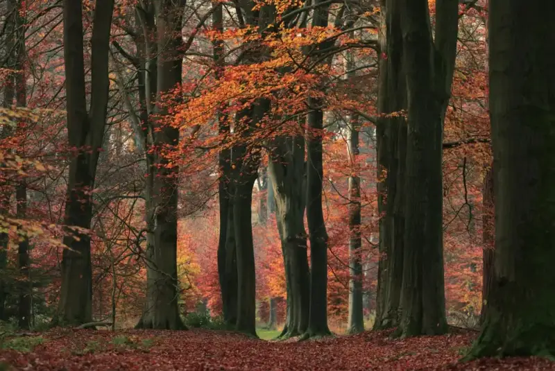
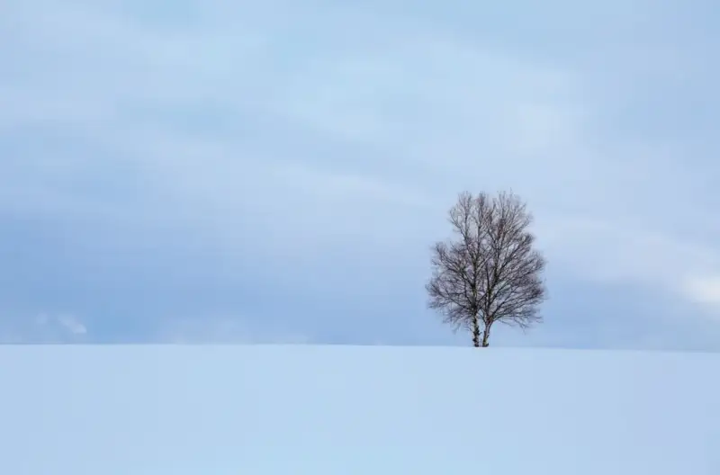
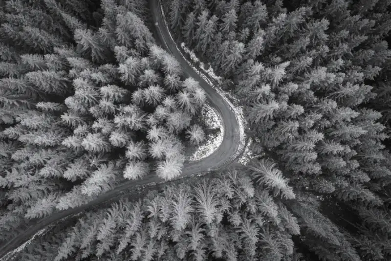
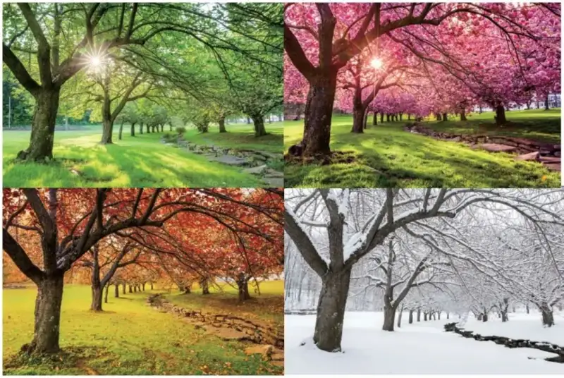
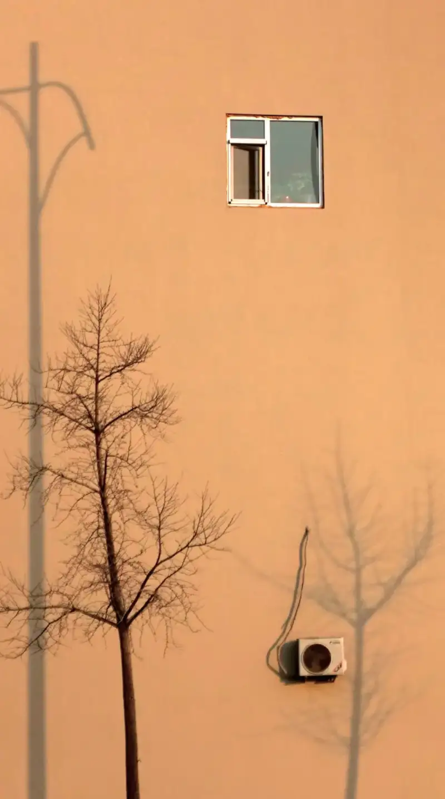

How do you photograph the most common trees in daily life? Today we will look at this in detail.
1. Vertical line composition
Emphasize the rhythm of repetition
Photographing a straight trunk gives you a vertical line composition. By cropping part of the trunk, you simplify the frame and emphasize its rhythm.
When you photograph the image below, use a branch of red leaves to break the plain arrangement of the trees and make the picture more interesting.

2. Converging line composition
Show the strong life of the trees
The photo below uses a low upward angle to form a converging line composition. It shows the strong life of the bamboo.
When you use converging lines, place the point where they meet in the upper right of the frame. This forms a diagonal composition and shows the upward growth of the bamboo.
3. Rule of thirds composition
Create a minimalist frame
Choose one tree. Shoot from far away and use a wider view so the tree takes up less of the frame. This gives you a minimalist style with a large empty space.
Place the tree near the lower-right intersection of the rule-of-thirds grid to make it stand out.

4. Curved line composition
Emphasize movement in the frame
When you shoot from high above with a drone, use a winding road to make a curved composition. This makes the frame feel more alive.
Use the road to split the frame and make a left-right symmetrical composition. The trees shot from a high angle also form a radial composition, which gives the frame some visual tension.

5. Symmetrical composition
Show a quiet feeling in the frame
Use the reflection on water to make an up-down symmetrical frame. To show a quiet feeling, shoot when there is no wind.
6. Series
Show the scenery of the four seasons
Shoot a tree in the same spot through the four seasons. The combined frames give a feeling of time passing. Such frames also touch the viewer's thoughts and make the viewer recall the time that has gone by.

7. Use tree shadows
Bring out the depth of light and shadow
Shadows add layers of light and shadow to the frame and give a fresh artistic effect. When you photograph a tree shadow, keep the following points in mind.
First, shoot when the light is soft, such as early morning or dusk.
Second, choose a simple scene. A wall, for example, makes the shadow stand out better.
Third, do not photograph only the shadow. Add some elements that relate to the shadow to make the photo richer.

Once you learn composition, even the most ordinary thing can show its beauty to the fullest. Pick up your camera, go downstairs, find a tree, and try to photograph it.